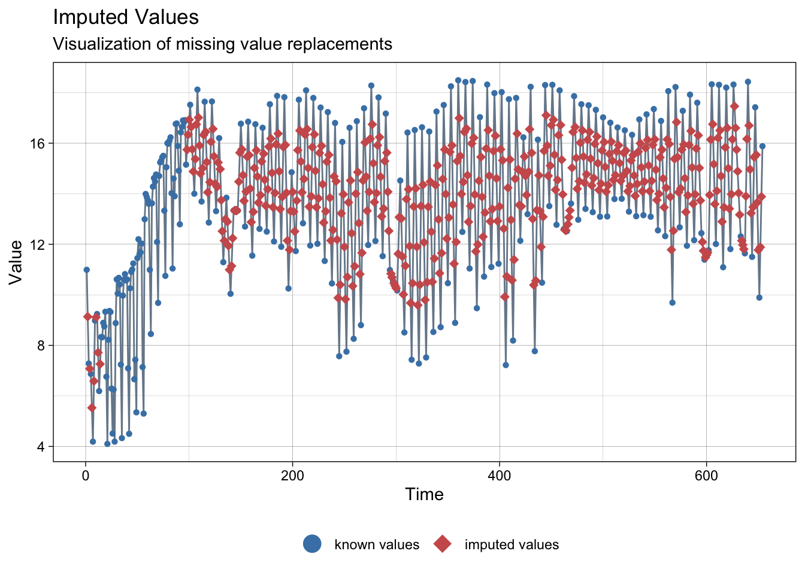

pacman::p_load(
here, # file locator
tidyverse, # data management and ggplot2 graphics
skimr, # get overview of data
janitor, # produce and adorn tabulations and cross-tabulations
tsibble,
imputeTS
)3 INE data
Load packages:
Data is available in the Spanish National Institute of Statistics in the following link. It is also provided a link for direct access to the download portal via queries.
Data can be downloaded in different formats. In our case we have used ‘CSV: separado por ;’
The technical project carried out for INE study is available in the following link.
ine_data <- read_csv2(
file = here("data", "raw", "ine_48252_estudio_movilidad.csv"),
show_col_types = FALSE
)ℹ Using "','" as decimal and "'.'" as grouping mark. Use `read_delim()` for more control.ine_data# A tibble: 20,667 × 7
`Total Nacional` `Comunidades y Ciu…` Provincias Islas `Tipo de dato` Periodo
<chr> <chr> <chr> <chr> <chr> <chr>
1 Total Nacional <NA> <NA> <NA> Porcentaje de… 29/12/…
2 Total Nacional <NA> <NA> <NA> Porcentaje de… 26/12/…
3 Total Nacional <NA> <NA> <NA> Porcentaje de… 22/12/…
4 Total Nacional <NA> <NA> <NA> Porcentaje de… 19/12/…
5 Total Nacional <NA> <NA> <NA> Porcentaje de… 15/12/…
6 Total Nacional <NA> <NA> <NA> Porcentaje de… 12/12/…
7 Total Nacional <NA> <NA> <NA> Porcentaje de… 8/12/2…
8 Total Nacional <NA> <NA> <NA> Porcentaje de… 1/12/2…
9 Total Nacional <NA> <NA> <NA> Porcentaje de… 28/11/…
10 Total Nacional <NA> <NA> <NA> Porcentaje de… 24/11/…
# … with 20,657 more rows, and 1 more variable: Total <dbl>It is needed to rename the colulmn’s name in order to facilitate the work.
ine_data <- ine_data %>%
select(
CA = 'Comunidades y Ciudades Autónomas',
province = Provincias,
islas = Islas,
fecha = Periodo,
flujo = Total
)
ine_data# A tibble: 20,667 × 5
CA province islas fecha flujo
<chr> <chr> <chr> <chr> <dbl>
1 <NA> <NA> <NA> 29/12/2021 15.9
2 <NA> <NA> <NA> 26/12/2021 10.2
3 <NA> <NA> <NA> 22/12/2021 18.6
4 <NA> <NA> <NA> 19/12/2021 12.6
5 <NA> <NA> <NA> 15/12/2021 21.0
6 <NA> <NA> <NA> 12/12/2021 12.9
7 <NA> <NA> <NA> 8/12/2021 12.3
8 <NA> <NA> <NA> 1/12/2021 21.4
9 <NA> <NA> <NA> 28/11/2021 12.3
10 <NA> <NA> <NA> 24/11/2021 20.7
# … with 20,657 more rowsTransform date to a valid format:
ine_data <- ine_data %>%
mutate(fecha = as.Date(fecha, format = "%d/%m/%Y"))
summary(ine_data$fecha) Min. 1st Qu. Median Mean 3rd Qu. Max.
"2019-11-18" "2020-05-23" "2020-10-18" "2020-11-27" "2021-05-23" "2021-12-29" There are missing data for CA and provinces. So, we proceed to elimite the missing information.
ine_data <- ine_data %>%
drop_na(CA, province)
skim(ine_data)| Name | ine_data |
| Number of rows | 15687 |
| Number of columns | 5 |
| _______________________ | |
| Column type frequency: | |
| character | 3 |
| Date | 1 |
| numeric | 1 |
| ________________________ | |
| Group variables | None |
Variable type: character
| skim_variable | n_missing | complete_rate | min | max | empty | n_unique | whitespace |
|---|---|---|---|---|---|---|---|
| CA | 0 | 1.00 | 5 | 27 | 0 | 19 | 0 |
| province | 0 | 1.00 | 4 | 22 | 0 | 52 | 0 |
| islas | 12948 | 0.17 | 5 | 13 | 0 | 11 | 0 |
Variable type: Date
| skim_variable | n_missing | complete_rate | min | max | median | n_unique |
|---|---|---|---|---|---|---|
| fecha | 0 | 1 | 2019-11-18 | 2021-12-29 | 2020-10-18 | 249 |
Variable type: numeric
| skim_variable | n_missing | complete_rate | mean | sd | p0 | p25 | p50 | p75 | p100 | hist |
|---|---|---|---|---|---|---|---|---|---|---|
| flujo | 0 | 1 | 13.03 | 4.98 | 0.83 | 9.44 | 12.69 | 16.61 | 36.7 | ▂▇▅▁▁ |
No isles will be used in our analysis, so instead of clean and impute missing values, we have decided to elimite them from the dataset.
We also eliminate the CA column since it information is redundant with province.
ine_data <- ine_data %>%
filter(is.na(islas)) %>%
select(-islas, -CA)Regarding completeness of the dataset, there are not daily information. The gap between days vary between one day (no gaps during lockdown) and up to four days.
To complete the data, we are going to interpolate the data between the known values.
In order to do that, we are going to transform data in a wider format (as a matrix).
ine_data <- ine_data %>%
pivot_wider(names_from = province, values_from = flujo)
ine_data# A tibble: 249 × 53
fecha Almería Cádiz Córdoba Granada Huelva Jaén Málaga Sevilla Huesca
<date> <dbl> <dbl> <dbl> <dbl> <dbl> <dbl> <dbl> <dbl> <dbl>
1 2021-12-29 15.9 16.4 15.0 17.6 13.6 13.1 17.4 17.6 12.6
2 2021-12-26 9.89 10.9 9.54 11.4 8.36 8.16 11.0 10.6 8.54
3 2021-12-22 17.4 17.1 15.4 18.4 14.1 13.0 18.8 19.3 13.3
4 2021-12-19 11.5 13.0 12.1 14.5 10.5 11.7 13.1 13.9 9.91
5 2021-12-15 18.4 19.3 18.4 20.4 16.7 16 21.0 22.9 14.3
6 2021-12-12 11.6 13.5 12.4 14.3 10.7 11.5 13.6 13.5 10.2
7 2021-12-08 12.3 13.7 12.2 13.8 11.4 10.2 14.0 13.5 11.9
8 2021-12-01 18.3 19.2 18.4 20.1 16.6 15.5 21.3 22.7 14.3
9 2021-11-28 11.8 12.5 11.7 13.9 10.3 9.89 13.7 13.2 9.11
10 2021-11-24 18.2 18.6 17.9 19.6 16.5 13.3 21.1 22.6 12.9
# … with 239 more rows, and 43 more variables: Teruel <dbl>, Zaragoza <dbl>,
# Asturias <dbl>, `Balears, Illes` <dbl>, `Palmas, Las` <dbl>,
# `Santa Cruz de Tenerife` <dbl>, Cantabria <dbl>, Ávila <dbl>, Burgos <dbl>,
# León <dbl>, Palencia <dbl>, Salamanca <dbl>, Segovia <dbl>, Soria <dbl>,
# Valladolid <dbl>, Zamora <dbl>, Albacete <dbl>, `Ciudad Real` <dbl>,
# Cuenca <dbl>, Guadalajara <dbl>, Toledo <dbl>, Barcelona <dbl>,
# Girona <dbl>, Lleida <dbl>, Tarragona <dbl>, `Alicante/Alacant` <dbl>, …For all the provinces, there are information for 18-nov-2019 which is the pre-pandemic reference value. Since it is not needed to show variations in mobility, we are going to filter it.
ine_data <- ine_data %>%
filter(fecha > as.Date("18/11/2019", format = "%d/%m/%Y")) %>%
arrange(fecha)
summary(ine_data$fecha) Min. 1st Qu. Median Mean 3rd Qu. Max.
"2020-03-16" "2020-05-23" "2020-10-19" "2020-11-28" "2021-05-23" "2021-12-29" To interpolate the data, we need to convert the dataframe in a time series format and fill gaps with the missing days.
ine_data <- ine_data %>%
as_tsibble() %>%
fill_gaps()Using `fecha` as index variable.The total number of missing values per province are:
colSums(is.na(ine_data)) fecha Almería Cádiz
0 406 406
Córdoba Granada Huelva
406 406 406
Jaén Málaga Sevilla
406 406 406
Huesca Teruel Zaragoza
406 406 406
Asturias Balears, Illes Palmas, Las
406 406 406
Santa Cruz de Tenerife Cantabria Ávila
406 406 406
Burgos León Palencia
406 406 406
Salamanca Segovia Soria
406 406 406
Valladolid Zamora Albacete
406 406 406
Ciudad Real Cuenca Guadalajara
406 406 406
Toledo Barcelona Girona
406 406 406
Lleida Tarragona Alicante/Alacant
406 406 406
Castellón/Castelló Valencia/València Badajoz
406 406 406
Cáceres Coruña, A Lugo
406 406 406
Ourense Pontevedra Madrid
406 406 406
Murcia Navarra Araba/Álava
406 406 406
Bizkaia Gipuzkoa Rioja, La
406 406 406
Ceuta Melilla
406 406 The missing data is completed by interpolating available information. Here is an example of how the interpolation works in our dataset.
imp <- na_interpolation(ine_data)
ggplot_na_imputations(ine_data, imp)
Missing data interpolation:
# Aplicamos interpolacion
ine_data <- na_interpolation(ine_data)
ine_data# A tsibble: 654 x 53 [1D]
fecha Almería Cádiz Córdoba Granada Huelva Jaén Málaga Sevilla Huesca
<date> <dbl> <dbl> <dbl> <dbl> <dbl> <dbl> <dbl> <dbl> <dbl>
1 2020-03-16 11.0 10.7 11.9 11.4 11.4 8.81 11.4 12.3 10.3
2 2020-03-17 9.14 10.1 11.4 9.78 10.9 7.65 10.7 11.5 10.2
3 2020-03-18 7.28 9.5 10.9 8.16 10.5 6.49 10.1 10.8 10.1
4 2020-03-19 7.08 9.28 10.7 8.06 10.2 6.30 9.80 10.6 10.0
5 2020-03-20 6.87 9.05 10.4 7.97 10.0 6.12 9.53 10.3 9.98
6 2020-03-21 5.53 7.24 8.06 7.08 7.77 5.35 7.09 7.89 7.11
7 2020-03-22 4.19 5.42 5.7 6.2 5.51 4.57 4.65 5.44 4.24
8 2020-03-23 6.59 7.74 8.24 8.20 8.30 6.25 7.02 8.48 7.04
9 2020-03-24 8.98 10.1 10.8 10.2 11.1 7.93 9.39 11.5 9.85
10 2020-03-25 9.11 10.2 10.8 10.0 11.0 8.02 9.47 11.5 9.72
# … with 644 more rows, and 43 more variables: Teruel <dbl>, Zaragoza <dbl>,
# Asturias <dbl>, `Balears, Illes` <dbl>, `Palmas, Las` <dbl>,
# `Santa Cruz de Tenerife` <dbl>, Cantabria <dbl>, Ávila <dbl>, Burgos <dbl>,
# León <dbl>, Palencia <dbl>, Salamanca <dbl>, Segovia <dbl>, Soria <dbl>,
# Valladolid <dbl>, Zamora <dbl>, Albacete <dbl>, `Ciudad Real` <dbl>,
# Cuenca <dbl>, Guadalajara <dbl>, Toledo <dbl>, Barcelona <dbl>,
# Girona <dbl>, Lleida <dbl>, Tarragona <dbl>, `Alicante/Alacant` <dbl>, …Now, the missing values per province are zero.
colSums(is.na(ine_data)) fecha Almería Cádiz
0 0 0
Córdoba Granada Huelva
0 0 0
Jaén Málaga Sevilla
0 0 0
Huesca Teruel Zaragoza
0 0 0
Asturias Balears, Illes Palmas, Las
0 0 0
Santa Cruz de Tenerife Cantabria Ávila
0 0 0
Burgos León Palencia
0 0 0
Salamanca Segovia Soria
0 0 0
Valladolid Zamora Albacete
0 0 0
Ciudad Real Cuenca Guadalajara
0 0 0
Toledo Barcelona Girona
0 0 0
Lleida Tarragona Alicante/Alacant
0 0 0
Castellón/Castelló Valencia/València Badajoz
0 0 0
Cáceres Coruña, A Lugo
0 0 0
Ourense Pontevedra Madrid
0 0 0
Murcia Navarra Araba/Álava
0 0 0
Bizkaia Gipuzkoa Rioja, La
0 0 0
Ceuta Melilla
0 0 Dataset summary:
summary(ine_data) fecha Almería Cádiz Córdoba
Min. :2020-03-16 Min. : 4.10 Min. : 5.42 Min. : 5.68
1st Qu.:2020-08-26 1st Qu.:12.12 1st Qu.:13.60 1st Qu.:11.99
Median :2021-02-05 Median :14.07 Median :15.94 Median :13.63
Mean :2021-02-05 Mean :13.72 Mean :15.24 Mean :13.56
3rd Qu.:2021-07-18 3rd Qu.:15.76 3rd Qu.:17.65 3rd Qu.:15.40
Max. :2021-12-29 Max. :18.49 Max. :20.37 Max. :18.85
Granada Huelva Jaén Málaga
Min. : 5.71 Min. : 5.51 Min. : 4.17 Min. : 4.56
1st Qu.:13.13 1st Qu.:11.48 1st Qu.:10.30 1st Qu.:13.43
Median :15.29 Median :13.26 Median :11.64 Median :16.03
Mean :14.80 Mean :13.10 Mean :11.38 Mean :15.33
3rd Qu.:17.00 3rd Qu.:15.03 3rd Qu.:12.87 3rd Qu.:17.90
Max. :20.55 Max. :18.76 Max. :16.40 Max. :21.37
Sevilla Huesca Teruel Zaragoza
Min. : 5.44 Min. : 4.24 Min. : 1.950 Min. : 5.80
1st Qu.:13.00 1st Qu.:10.99 1st Qu.: 6.995 1st Qu.:13.30
Median :15.34 Median :12.62 Median : 8.685 Median :15.90
Mean :15.27 Mean :12.38 Mean : 8.232 Mean :15.88
3rd Qu.:17.72 3rd Qu.:14.09 3rd Qu.: 9.849 3rd Qu.:18.57
Max. :23.10 Max. :17.95 Max. :12.240 Max. :24.51
Asturias Balears, Illes Palmas, Las Santa Cruz de Tenerife
Min. : 5.24 Min. : 3.92 Min. : 5.11 Min. : 5.20
1st Qu.:12.34 1st Qu.:13.40 1st Qu.:13.22 1st Qu.:13.37
Median :14.92 Median :16.00 Median :15.60 Median :15.83
Mean :14.78 Mean :15.43 Mean :15.38 Mean :15.59
3rd Qu.:17.18 3rd Qu.:18.19 3rd Qu.:17.75 3rd Qu.:17.99
Max. :24.28 Max. :22.97 Max. :22.60 Max. :27.24
Cantabria Ávila Burgos León
Min. : 5.84 Min. : 4.51 Min. : 3.97 Min. : 5.56
1st Qu.:13.28 1st Qu.:10.18 1st Qu.:10.36 1st Qu.:12.73
Median :16.35 Median :11.88 Median :12.15 Median :14.70
Mean :16.05 Mean :11.56 Mean :12.01 Mean :14.47
3rd Qu.:18.84 3rd Qu.:13.25 3rd Qu.:13.89 3rd Qu.:16.61
Max. :25.78 Max. :17.09 Max. :18.65 Max. :20.39
Palencia Salamanca Segovia Soria
Min. : 5.05 Min. : 6.02 Min. : 4.96 Min. : 3.030
1st Qu.:12.10 1st Qu.:12.68 1st Qu.:10.57 1st Qu.: 7.553
Median :14.25 Median :14.40 Median :12.13 Median : 8.706
Mean :13.98 Mean :14.21 Mean :12.34 Mean : 9.004
3rd Qu.:16.22 3rd Qu.:16.28 3rd Qu.:14.23 3rd Qu.:10.776
Max. :20.25 Max. :20.24 Max. :19.65 Max. :14.310
Valladolid Zamora Albacete Ciudad Real
Min. : 5.55 Min. : 4.82 Min. : 3.43 Min. : 3.080
1st Qu.:13.03 1st Qu.:10.98 1st Qu.:10.75 1st Qu.: 8.534
Median :15.58 Median :12.74 Median :12.53 Median : 9.940
Mean :15.58 Mean :12.53 Mean :12.24 Mean : 9.674
3rd Qu.:18.56 3rd Qu.:14.41 3rd Qu.:14.25 3rd Qu.:11.237
Max. :23.70 Max. :17.99 Max. :17.46 Max. :13.670
Cuenca Guadalajara Toledo Barcelona
Min. : 3.010 Min. : 4.38 Min. : 4.15 Min. : 6.42
1st Qu.: 8.873 1st Qu.:11.97 1st Qu.:11.22 1st Qu.:14.37
Median :10.520 Median :14.20 Median :13.17 Median :17.23
Mean :10.275 Mean :14.13 Mean :12.94 Mean :16.97
3rd Qu.:11.902 3rd Qu.:16.73 3rd Qu.:15.18 3rd Qu.:19.88
Max. :15.270 Max. :20.71 Max. :19.05 Max. :26.24
Girona Lleida Tarragona Alicante/Alacant
Min. : 4.16 Min. : 5.16 Min. : 4.93 Min. : 5.72
1st Qu.:11.18 1st Qu.:11.07 1st Qu.:11.55 1st Qu.:14.87
Median :13.64 Median :12.69 Median :13.69 Median :17.21
Mean :13.04 Mean :12.94 Mean :13.39 Mean :16.51
3rd Qu.:15.11 3rd Qu.:14.98 3rd Qu.:15.59 3rd Qu.:18.81
Max. :19.41 Max. :20.68 Max. :20.06 Max. :22.39
Castellón/Castelló Valencia/València Badajoz Cáceres
Min. : 4.95 Min. : 6.17 Min. : 4.90 Min. : 4.02
1st Qu.:13.07 1st Qu.:15.59 1st Qu.:10.73 1st Qu.:10.23
Median :15.11 Median :18.20 Median :12.47 Median :11.87
Mean :14.82 Mean :17.89 Mean :12.27 Mean :11.52
3rd Qu.:17.04 3rd Qu.:20.74 3rd Qu.:14.07 3rd Qu.:13.29
Max. :20.98 Max. :25.81 Max. :17.56 Max. :16.27
Coruña, A Lugo Ourense Pontevedra
Min. : 6.02 Min. : 4.88 Min. : 6.43 Min. : 6.15
1st Qu.:12.90 1st Qu.:10.94 1st Qu.:13.11 1st Qu.:13.85
Median :15.60 Median :13.12 Median :15.33 Median :16.95
Mean :15.28 Mean :12.74 Mean :15.12 Mean :16.61
3rd Qu.:17.89 3rd Qu.:14.88 3rd Qu.:17.46 3rd Qu.:19.77
Max. :23.06 Max. :18.32 Max. :22.01 Max. :24.80
Madrid Murcia Navarra Araba/Álava
Min. : 5.95 Min. : 5.13 Min. : 5.33 Min. : 6.30
1st Qu.:13.69 1st Qu.:11.64 1st Qu.:13.10 1st Qu.:14.78
Median :16.48 Median :13.43 Median :15.53 Median :17.75
Mean :16.40 Mean :13.40 Mean :15.40 Mean :17.39
3rd Qu.:19.49 3rd Qu.:15.37 3rd Qu.:17.96 3rd Qu.:20.28
Max. :25.68 Max. :20.19 Max. :23.29 Max. :25.40
Bizkaia Gipuzkoa Rioja, La Ceuta
Min. : 7.53 Min. : 4.71 Min. : 4.74 Min. : 4.870
1st Qu.:16.12 1st Qu.:11.71 1st Qu.:12.17 1st Qu.: 9.985
Median :19.37 Median :14.32 Median :14.29 Median :11.860
Mean :19.23 Mean :14.17 Mean :14.11 Mean :11.977
3rd Qu.:22.63 3rd Qu.:16.65 3rd Qu.:16.34 3rd Qu.:13.985
Max. :29.00 Max. :22.56 Max. :21.37 Max. :18.340
Melilla
Min. : 6.48
1st Qu.:12.45
Median :14.33
Mean :14.32
3rd Qu.:16.19
Max. :20.19 Finally, we transform the data to a longer format so we will be able to easily join the data with other sources.
ine_data <- ine_data %>%
pivot_longer(!fecha, names_to = "province", values_to = "flujo")
ine_data# A tsibble: 34,008 x 3 [1D]
# Key: province [52]
fecha province flujo
<date> <chr> <dbl>
1 2020-03-16 Almería 11.0
2 2020-03-16 Cádiz 10.7
3 2020-03-16 Córdoba 11.9
4 2020-03-16 Granada 11.4
5 2020-03-16 Huelva 11.4
6 2020-03-16 Jaén 8.81
7 2020-03-16 Málaga 11.4
8 2020-03-16 Sevilla 12.3
9 2020-03-16 Huesca 10.3
10 2020-03-16 Teruel 6.77
# … with 33,998 more rows